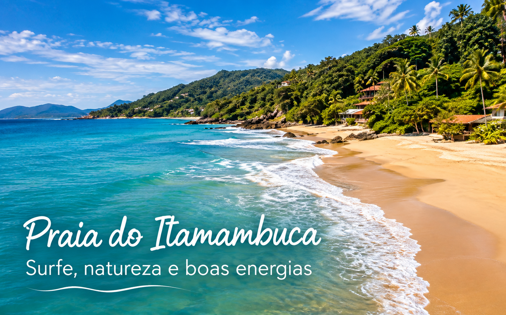
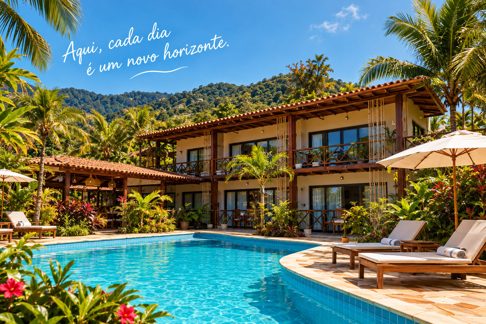
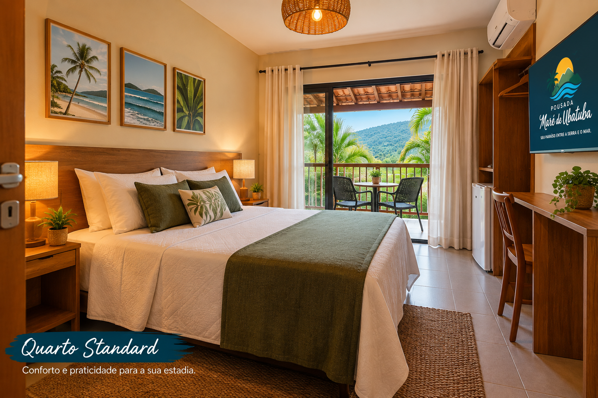
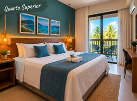
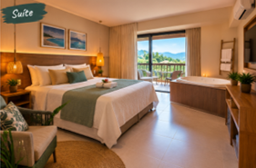
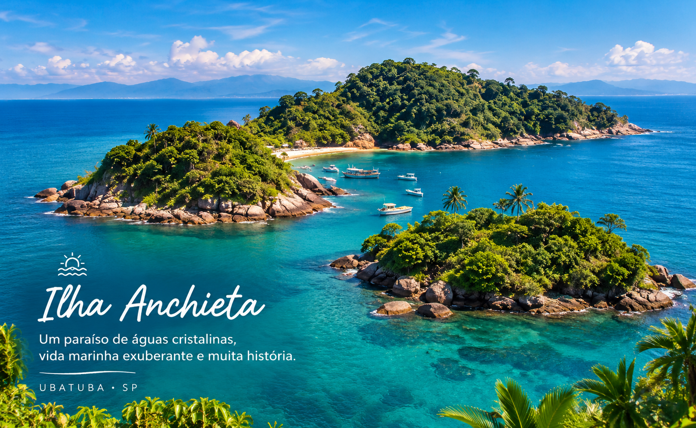
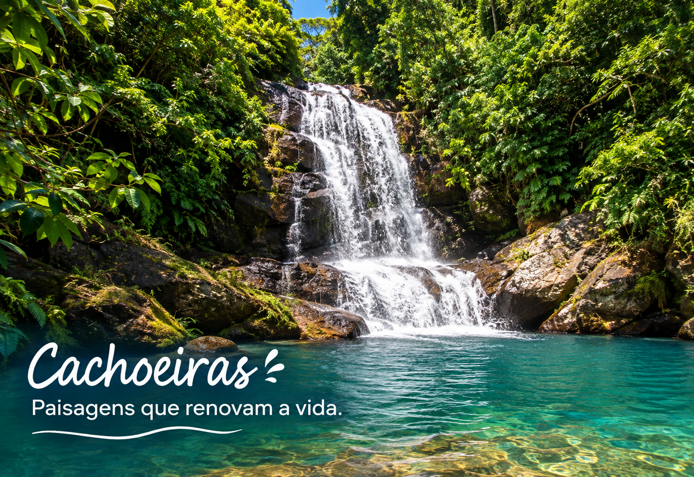
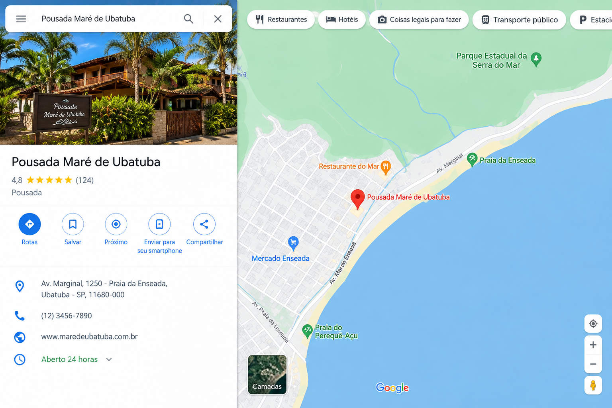

Praia
Praia de Itamambuca
É um destino perfeito para quem busca tranquilidade, contato com a natureza e momentos inesquecíveis à beira-mar.
Em meio às belezas naturais de Ubatuba, a Pousada Maré de Ubatuba é o lugar perfeito para quem busca descanso,
conforto e momentos especiais.
Nossa pousada foi pensada para proporcionar uma experiência acolhedora, unindo o charme do litoral com a
tranquilidade da natureza.
Aqui, você pode relaxar na piscina, aproveitar um delicioso café da manhã e descansar em ambientes confortáveis
e aconchegantes.
E quando quiser explorar, Ubatuba espera por você: praias, trilhas, cachoeiras, ilhas e
paisagens incríveis, coisas que tornam um destino especial.


Um espaço aconchegante e acolhedor para quem deseja descansar depois de um dia explorando as praias
e belezas naturais de Ubatuba. O Quarto Standard combina decoração inspirada na natureza, cama confortável
e uma varanda com vista para o verde da região.
Ideal para: quem busca conforto, praticidade e uma estadia tranquila.
Acomoda até 2 pessoas (1 cama de casal)

O Quarto Superior oferece um ambiente mais amplo e uma atmosfera especial para tornar sua estadia ainda
mais agradável. Com decoração inspirada no mar e na Mata Atlântica, o quarto possui uma varanda onde
você pode apreciar a paisagem e aproveitar momentos de tranquilidade.
Ideal para: famílias, amigos ou hóspedes que desejam mais espaço e conforto.
Acomoda até 3 pessoas (1 cama de casal + 1 cama de solteiro)

Nossa Suíte foi pensada para proporcionar uma experiência diferenciada. O ambiente combina elegância,
conforto e elementos naturais, criando um espaço perfeito para descansar depois de um dia de praia, trilhas
e passeios por Ubatuba. A varanda completa a experiência com uma vista encantadora da natureza.
Ideal para: quem procura uma estadia mais exclusiva, confortável e especial.
Acomoda até 4 pessoas (2 camas de casal)

É um destino perfeito para quem busca tranquilidade, contato com a natureza e momentos inesquecíveis à beira-mar.

Cercada por águas cristalinas e pela Mata Atlântica, ela oferece praias preservadas, trilhas e paisagens incríveis.

Com águas cristalinas, vegetação preservada e paisagens tranquilas, elas oferecem um ambiente perfeito para relaxar, apreciar a biodiversidade e conhecer um dos encantos naturais da região.

📍 Av. Marginal, 1250 – Praia da Enseada, Ubatuba – SP, 11680-000